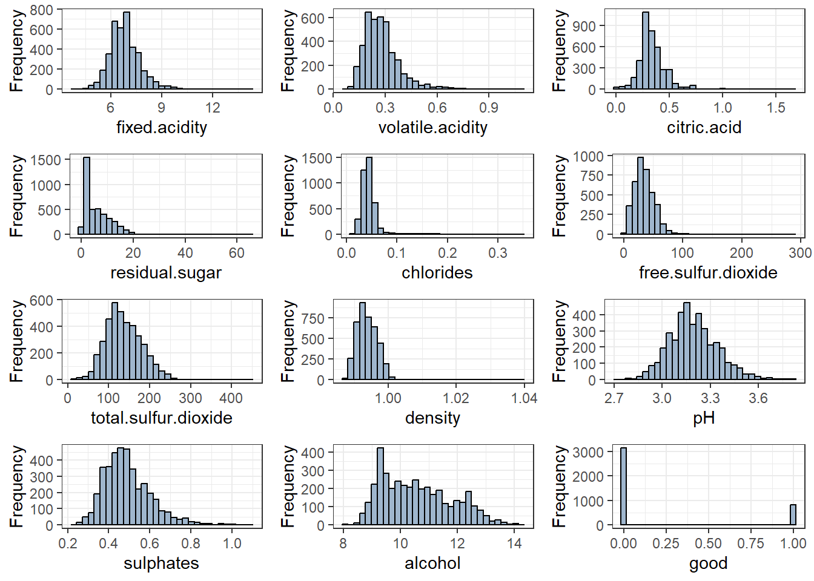
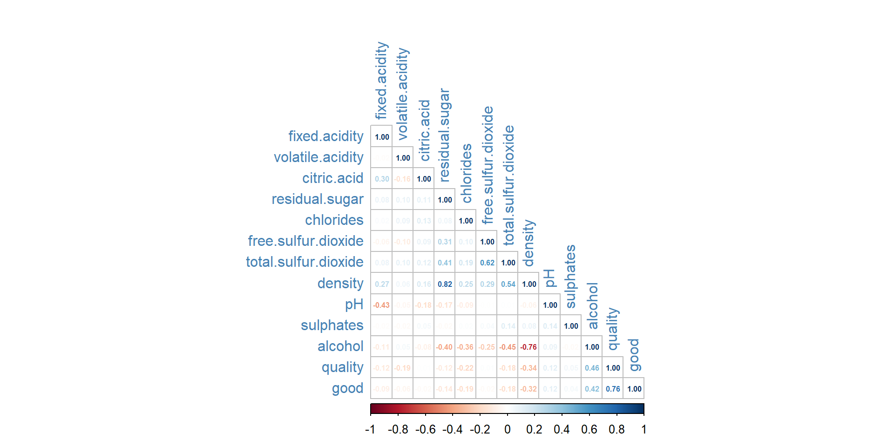
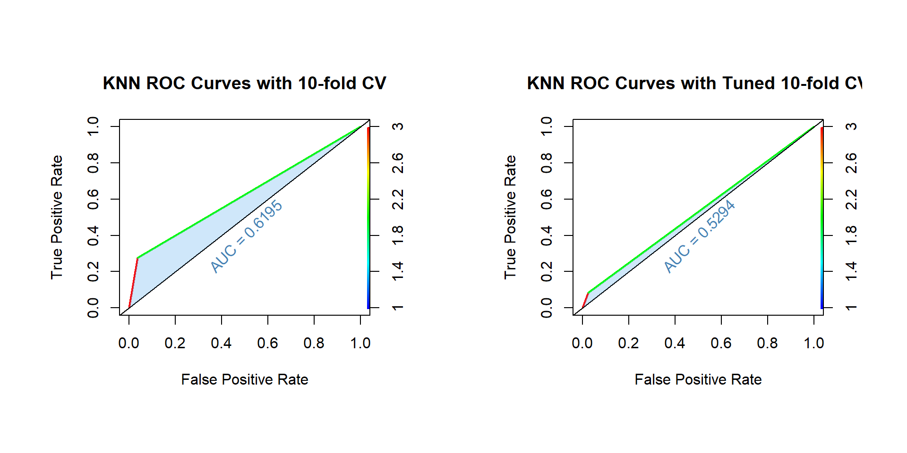
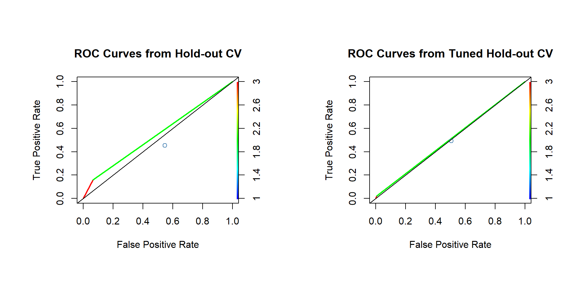
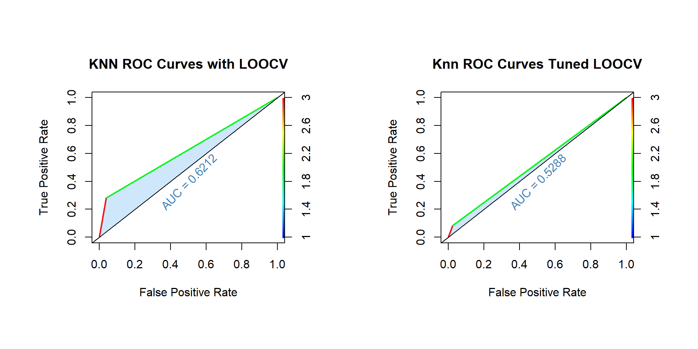
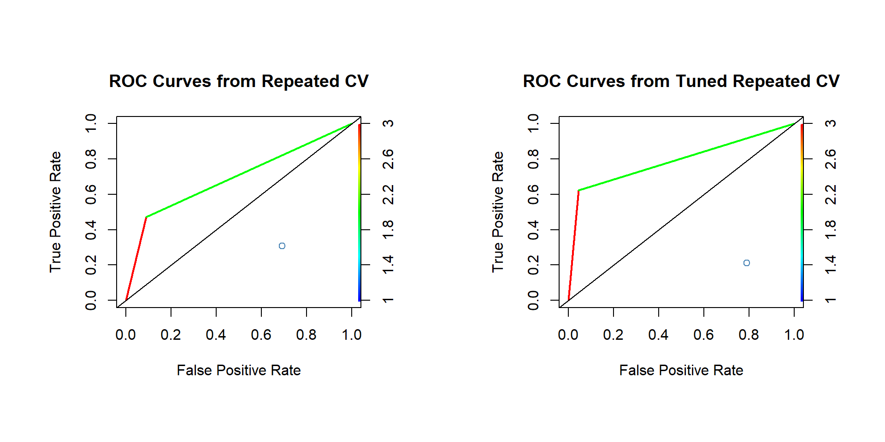
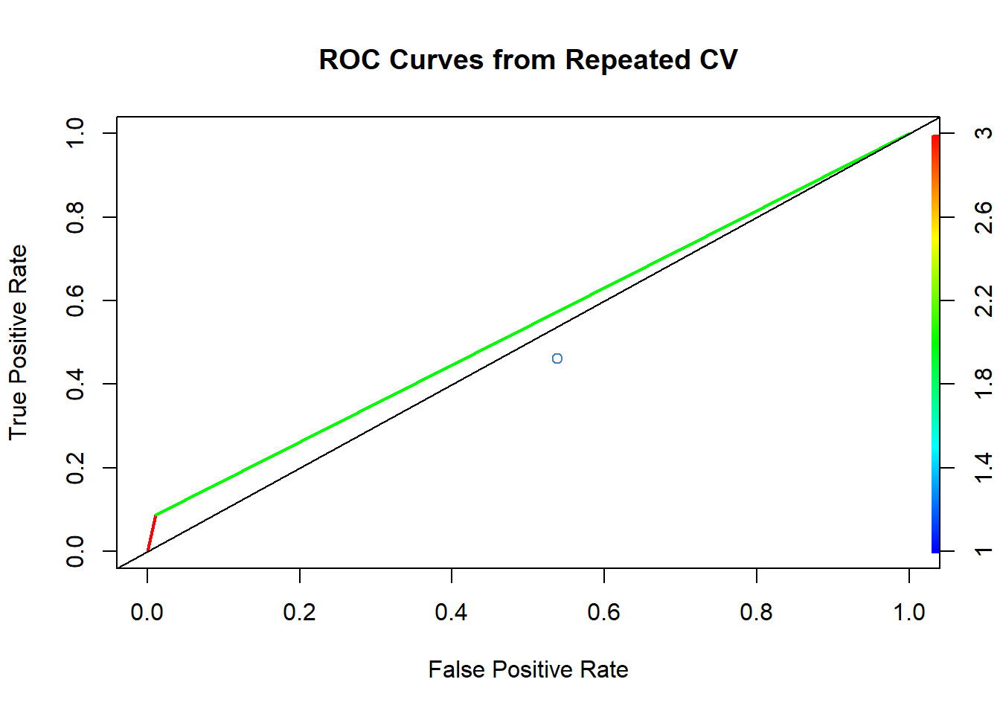
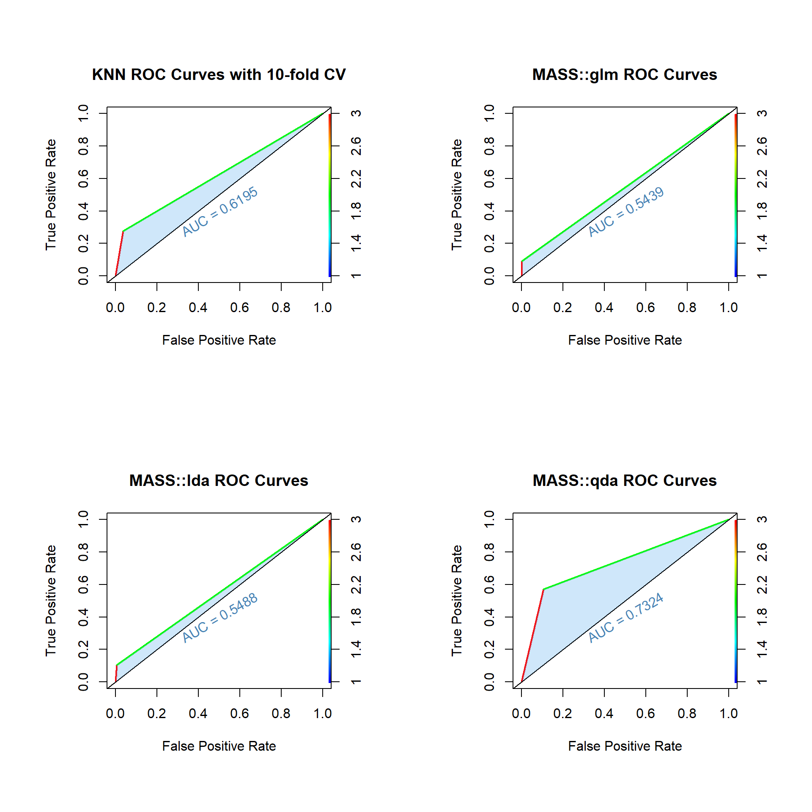

Introduction to Statistical Learning
STAT 387
Preamble
Consider the wine quality dataset from UCI Machine Learning Respository. We will focus only on the data concerning white wines (and not red wines). Dichotomize the quality variable as good, which takes the value 1 if quality ≥ 7 and the value 0, otherwise. We will take good as response and all the 11 physiochemical characteristics of the wines in the data as predictors.
Problem Statements
Use 10-fold cross-validation for estimating the test error rates below and compute the estimates using caret package with seed set to 1234 before each computation.
- Fit a KNN with K chosen optimally using test error rate. Report error rate, sensitivity, specificity, and AUC for the optimal KNN based on the training data. Also, report its estimated test error rate.
- Repeat (a) using logistic regression.
- Repeat (a) using LDA.
- Repeat (a) using QDA.
- Compare the results in (a)-(d). Which classifier would you recommend? Justify your answer.
Methodologies
- KNN
- GLM/logit/glmnet
- LDA
- QDA
- Regression/Multi-Regression
- Naive Bayes
- Decision Tree
- Classification Tree
- Regression Tree
- Classification and Regression Trees (CART)
- Iterative Dichotomiser 3 (ID3)
- C4.5
- Random Forest
- Classification
- Regression
- Bagged
- Boosted
- Gradient Boosted Trees (GBT)
- Extremely Randomized Trees (ExtraTrees)
- SVM
Data Description
This is a dataset of wine quality containing 4898 observations of 12 variables. The variables are:
fixed.acidity: The amount of fixed acid in the wine (\(g/dm^3\))volatile.acidity: The amount of volatile acid in the wine (\(g/dm^4\))citric.acid: The amount of citric acid in the wine (\(g/dm^3\))residual.sugar: The amount of residual sugar in the wine (\(g/dm^3\))chlorides: The amount of salt in the wine (\(g/dm^3\))free.sulfur.dioxide: The amount of free sulfur dioxide in the wine (\(mg/dm^3\))total.sulfur.dioxide: The amount of total sulfur dioxide in the wine (\(mg/dm^3\))density: The density of the wine (\(g/dm^3\))pH: The \(pH\) value of the winesulphates: The amount of sulphates in the wine (\(g/dm^3\))alcohol: The alcohol content of the wine (\(\% vol\))quality: The quality score of the wine (\(0-10\))
After removing the duplicate rows from our data set, we are left with 3961 observations of the above 11 variables minus quality column variable, and introduced a new variable good as our response:
good: A binary variable indicating whether the wine is good (quality\(\geq 7\)) or not (quality\(<7\)).
Exploratory Analysis
Data Import
Data Analysis
[1] 4898 13Show/Hide Code
[1] 3961 13'data.frame': 3961 obs. of 13 variables:
$ fixed.acidity : num 7 6.3 8.1 7.2 6.2 8.1 8.1 8.6 7.9 6.6 ...
$ volatile.acidity : num 0.27 0.3 0.28 0.23 0.32 0.22 0.27 0.23 0.18 0.16 ...
$ citric.acid : num 0.36 0.34 0.4 0.32 0.16 0.43 0.41 0.4 0.37 0.4 ...
$ residual.sugar : num 20.7 1.6 6.9 8.5 7 1.5 1.45 4.2 1.2 1.5 ...
$ chlorides : num 0.045 0.049 0.05 0.058 0.045 0.044 0.033 0.035 0.04 0.044 ...
$ free.sulfur.dioxide : num 45 14 30 47 30 28 11 17 16 48 ...
$ total.sulfur.dioxide: num 170 132 97 186 136 129 63 109 75 143 ...
$ density : num 1.001 0.994 0.995 0.996 0.995 ...
$ pH : num 3 3.3 3.26 3.19 3.18 3.22 2.99 3.14 3.18 3.54 ...
$ sulphates : num 0.45 0.49 0.44 0.4 0.47 0.45 0.56 0.53 0.63 0.52 ...
$ alcohol : num 8.8 9.5 10.1 9.9 9.6 11 12 9.7 10.8 12.4 ...
$ quality : int 6 6 6 6 6 6 5 5 5 7 ...
$ good : num 0 0 0 0 0 0 0 0 0 1 ... fixed.acidity volatile.acidity citric.acid residual.sugar
Min. : 3.800 Min. :0.0800 Min. :0.0000 Min. : 0.600
1st Qu.: 6.300 1st Qu.:0.2100 1st Qu.:0.2700 1st Qu.: 1.600
Median : 6.800 Median :0.2600 Median :0.3200 Median : 4.700
Mean : 6.839 Mean :0.2805 Mean :0.3343 Mean : 5.915
3rd Qu.: 7.300 3rd Qu.:0.3300 3rd Qu.:0.3900 3rd Qu.: 8.900
Max. :14.200 Max. :1.1000 Max. :1.6600 Max. :65.800
chlorides free.sulfur.dioxide total.sulfur.dioxide density
Min. :0.00900 Min. : 2.00 Min. : 9.0 Min. :0.9871
1st Qu.:0.03500 1st Qu.: 23.00 1st Qu.:106.0 1st Qu.:0.9916
Median :0.04200 Median : 33.00 Median :133.0 Median :0.9935
Mean :0.04591 Mean : 34.89 Mean :137.2 Mean :0.9938
3rd Qu.:0.05000 3rd Qu.: 45.00 3rd Qu.:166.0 3rd Qu.:0.9957
Max. :0.34600 Max. :289.00 Max. :440.0 Max. :1.0390
pH sulphates alcohol quality
Min. :2.720 Min. :0.2200 Min. : 8.00 Min. :3.000
1st Qu.:3.090 1st Qu.:0.4100 1st Qu.: 9.50 1st Qu.:5.000
Median :3.180 Median :0.4800 Median :10.40 Median :6.000
Mean :3.195 Mean :0.4904 Mean :10.59 Mean :5.855
3rd Qu.:3.290 3rd Qu.:0.5500 3rd Qu.:11.40 3rd Qu.:6.000
Max. :3.820 Max. :1.0800 Max. :14.20 Max. :9.000
good
Min. :0.0000
1st Qu.:0.0000
Median :0.0000
Mean :0.2083
3rd Qu.:0.0000
Max. :1.0000 [1] 0
3 4 5 6 7 8 9
20 153 1175 1788 689 131 5 Data Histograms
Show/Hide Code
wine.colnames <- colnames(wine.data[, 1:12])
num_plots <- length(wine.colnames)
num_rows <- ceiling(num_plots/3)
# Create an empty list to store plots
grid_arr <- list()
# Loop over each column name in the wine.colnames vector
for(i in 1:num_plots) {
# Create a ggplot object for the current column using aes
plt <- ggplot(data = wine.data, aes_string(x = wine.colnames[i])) +
geom_histogram(binwidth = diff(range(wine.data[[wine.colnames[i]]]))/30,
color = "black", fill = "slategray3") +
labs(x = wine.colnames[i], y = "Frequency") +
theme_bw()
# Add the current plot to the grid_arr list
grid_arr[[i]] <- plt
}
grid_arr <- do.call(gridExtra::grid.arrange, c(grid_arr, ncol = 3))
Data Relationships
Show/Hide Code

Show/Hide Code

Data Split
Show/Hide Code
# Splitting the dataset into train and test (7/10th for train remaining for test)
inTrain <- caret::createDataPartition(wine.data$good, p = 7/10, list = F)
train <- wine.data[inTrain,]
test <- wine.data[-inTrain,]
# Convert the outcome variable to a factor with two levels
train$good <- as.factor(train$good)
test$good <- as.factor(test$good)K-Nearest Neightbor
Model Construction
Show/Hide Code
#--------------------#
#-----K-fold CV------#
#--------------------#
set.seed(1234)
# Define the training control object for 10-fold cross-validation
train_control <- trainControl(method = "cv", number = 10)
# Train the KNN model using 10-fold cross-validation
# tuneLength argument to specify the range of values of K to be considered for tuning
set.seed(1234)
knn_model <- train(good ~ .,
data = train,
method = "knn",
trControl = train_control)
# Save the model into .Rdata for future import
save(knn_model, file = "dataset\\knn.model_kfoldCV.Rdata")
#--------------------------#
#-----K-fold CV (Mod)------#
#--------------------------#
set.seed(1234)
train_control <- trainControl(method = "cv", number = 10)
set.seed(1234)
knn_model <- train(good ~ .,
data = train,
method = "knn",
trControl = train_control,
tuneLength = 10)
# Save the model into .Rdata for future import
save(knn_model, file = "dataset\\knn.model_kfoldCV_mod.Rdata")
#--------------------#
#----Hold-out CV-----#
#--------------------#
set.seed(1234)
train_control <- trainControl(method = "none",)
set.seed(1234)
knn_model <- train(good ~ .,
data = train,
method = "knn")
save(knn_model, file = "dataset\\knn.model_holdoutCV.Rdata")
#--------------------------#
#----Hold-out CV (Mod)-----#
#--------------------------#
set.seed(1234)
train_control <- trainControl(method = "none",)
set.seed(1234)
knn_model <- train(good ~ .,
data = train,
method = "knn",
tuneGrid = expand.grid(k=1:30))
save(knn_model, file = "dataset\\knn.model_holdoutCV_mod.Rdata")
#--------------------#
#-------LOOCV--------#
#--------------------#
set.seed(1234)
train_control <- trainControl(method = "LOOCV")
set.seed(1234)
knn_model <- train(good ~ .,
data = train,
method = "knn",
trControl = train_control)
save(knn_model, file = "dataset\\knn.model_looCV.Rdata")
#--------------------------#
#-------LOOCV (Mod)--------#
#--------------------------#
set.seed(1234)
train_control <- trainControl(method = "LOOCV")
set.seed(1234)
knn_model <- train(good ~ .,
data = train,
method = "knn",
trControl = train_control,
tuneLength = 10,
tuneGrid = expand.grid(k = 1:20))
save(knn_model, file = "dataset\\knn.model_looCV_mod.Rdata")
#--------------------#
#----Repeated CV-----#
#--------------------#
set.seed(1234)
train_control <- trainControl(method = "repeatedcv", number = 10, repeats = 5)
set.seed(1234)
knn_model <- train(good ~ .,
data = train,
method = "knn",
trControl = train_control)
save(knn_model, file = "dataset\\knn.model_repeatedCV.Rdata")
#--------------------------#
#----Repeated CV (Mod)-----#
#--------------------------#
set.seed(1234)
train_control <- trainControl(method = "repeatedcv", number = 10, repeats = 5)
kknn.grid <- expand.grid(kmax = c(3, 5, 7 ,9, 11), distance = c(1, 2, 3),
kernel = c("rectangular", "gaussian", "cos"))
set.seed(1234)
knn_model <- train(good ~ .,
data = train,
method = "kknn",
trControl = train_control,
tuneGrid = kknn.grid,
preProcess = c("center", "scale"))
save(knn_model, file = "dataset\\knn.model_repeatedCV_mod.Rdata")K-fold CV
Show/Hide Code
Confusion Matrix and Statistics
Reference
Prediction 0 1
0 873 194
1 76 45
Accuracy : 0.7727
95% CI : (0.7478, 0.7963)
No Information Rate : 0.7988
P-Value [Acc > NIR] : 0.9878
Kappa : 0.1327
Mcnemar's Test P-Value : 1.076e-12
Sensitivity : 0.9199
Specificity : 0.1883
Pos Pred Value : 0.8182
Neg Pred Value : 0.3719
Prevalence : 0.7988
Detection Rate : 0.7348
Detection Prevalence : 0.8981
Balanced Accuracy : 0.5541
'Positive' Class : 0
Show/Hide Code
[1] 0.5541001Show/Hide Code
Show/Hide Code
knn.kfoldCV.ROC.plot<- recordPlot()
# Accuracy and Kappa value plot
knn.accu.kappa.plot <- function(knn.model) {
p <- ggplot(data=data.frame(k = knn.model$results$k,
Accuracy = knn.model$results$Accuracy,
Kappa = knn.model$results$Kappa)) +
geom_point(aes(x = k, y = Accuracy, color = "Accuracy")) +
geom_point(aes(x = k, y = Kappa, color = "Kappa")) +
geom_line(aes(x = k, y = Accuracy, linetype = "Accuracy", color = "Accuracy")) +
geom_line(aes(x = k, y = Kappa, linetype = "Kappa", color = "Kappa")) +
scale_color_manual(values = c("#98c379", "#e06c75"),
guide = guide_legend(override.aes = list(linetype = c(1, 0)) )) +
scale_linetype_manual(values=c("solid", "dotted"),
guide = guide_legend(override.aes = list(color = c("#98c379", "#e06c75")))) +
labs(x = "K value",
y = "Accuracy / Kappa") +
ylim(0, 1) +
theme_bw() +
theme(plot.title = element_text(hjust = 0.5)) +
guides(color = guide_legend(title = "Metric"),
linetype = guide_legend(title = "Metric"))
return(p)
}
knn.kfoldCV.plot <- knn.accu.kappa.plot(knn_model) +
geom_text(aes(x = k, y = Accuracy, label = round(Accuracy, 3)), vjust = -1) +
geom_text(aes(x = k, y = Kappa, label = round(Kappa, 3)), vjust = -1) +
ggtitle("KNN Model Performance (10-Fold CV)")Tuned
Show/Hide Code
Confusion Matrix and Statistics
Reference
Prediction 0 1
0 927 215
1 22 24
Accuracy : 0.8005
95% CI : (0.7766, 0.8229)
No Information Rate : 0.7988
P-Value [Acc > NIR] : 0.4596
Kappa : 0.1107
Mcnemar's Test P-Value : <2e-16
Sensitivity : 0.9768
Specificity : 0.1004
Pos Pred Value : 0.8117
Neg Pred Value : 0.5217
Prevalence : 0.7988
Detection Rate : 0.7803
Detection Prevalence : 0.9613
Balanced Accuracy : 0.5386
'Positive' Class : 0
Show/Hide Code
[1] 0.5386181Show/Hide Code
Show/Hide Code
Hold-out CV (Validation Set Approach)
Show/Hide Code
Confusion Matrix and Statistics
Reference
Prediction 0 1
0 886 201
1 63 38
Accuracy : 0.7778
95% CI : (0.753, 0.8011)
No Information Rate : 0.7988
P-Value [Acc > NIR] : 0.9663
Kappa : 0.1181
Mcnemar's Test P-Value : <2e-16
Sensitivity : 0.9336
Specificity : 0.1590
Pos Pred Value : 0.8151
Neg Pred Value : 0.3762
Prevalence : 0.7988
Detection Rate : 0.7458
Detection Prevalence : 0.9150
Balanced Accuracy : 0.5463
'Positive' Class : 0
Show/Hide Code
[1] 0.5463051Show/Hide Code
Show/Hide Code
Tuned
Show/Hide Code
Confusion Matrix and Statistics
Reference
Prediction 0 1
0 942 234
1 7 5
Accuracy : 0.7971
95% CI : (0.7731, 0.8197)
No Information Rate : 0.7988
P-Value [Acc > NIR] : 0.5745
Kappa : 0.021
Mcnemar's Test P-Value : <2e-16
Sensitivity : 0.99262
Specificity : 0.02092
Pos Pred Value : 0.80102
Neg Pred Value : 0.41667
Prevalence : 0.79882
Detection Rate : 0.79293
Detection Prevalence : 0.98990
Balanced Accuracy : 0.50677
'Positive' Class : 0
Show/Hide Code
[1] 0.5067722Show/Hide Code
Show/Hide Code
knn.holdoutCV_mod.ROC.plot <- recordPlot()
knn.holdoutCV_mod.plot <- knn.accu.kappa.plot(knn_model) +
geom_text(aes(x = k, y = Accuracy, label = round(Accuracy, 3)), hjust = -0.3, angle=90) +
geom_text(aes(x = k, y = Kappa, label = round(Kappa, 3)), hjust=-0.3, angle=90) +
ggtitle("KNN Model Performance (Tuned Hold-out CV)")LOOCV
Show/Hide Code
Confusion Matrix and Statistics
Reference
Prediction 0 1
0 915 170
1 34 69
Accuracy : 0.8283
95% CI : (0.8056, 0.8493)
No Information Rate : 0.7988
P-Value [Acc > NIR] : 0.00558
Kappa : 0.3213
Mcnemar's Test P-Value : < 2e-16
Sensitivity : 0.9642
Specificity : 0.2887
Pos Pred Value : 0.8433
Neg Pred Value : 0.6699
Prevalence : 0.7988
Detection Rate : 0.7702
Detection Prevalence : 0.9133
Balanced Accuracy : 0.6264
'Positive' Class : 0
Show/Hide Code
[1] 0.6264379Show/Hide Code
Tuned
Show/Hide Code
Confusion Matrix and Statistics
Reference
Prediction 0 1
0 927 215
1 22 24
Accuracy : 0.8005
95% CI : (0.7766, 0.8229)
No Information Rate : 0.7988
P-Value [Acc > NIR] : 0.4596
Kappa : 0.1107
Mcnemar's Test P-Value : <2e-16
Sensitivity : 0.9768
Specificity : 0.1004
Pos Pred Value : 0.8117
Neg Pred Value : 0.5217
Prevalence : 0.7988
Detection Rate : 0.7803
Detection Prevalence : 0.9613
Balanced Accuracy : 0.5386
'Positive' Class : 0
Show/Hide Code
[1] 0.5386181Show/Hide Code
Show/Hide Code
knn.looCV_mod.ROC.plot <- recordPlot()
knn.looCV_mod.plot <- knn.accu.kappa.plot(knn_model) +
geom_text(aes(x = k, y = Accuracy, label = round(Accuracy, 3)), hjust = -0.3, angle=90) +
geom_text(aes(x = k, y = Kappa, label = round(Kappa, 3)), hjust = -0.3, angle=90) +
ggtitle("KNN Model Performance (Tuned LOOCV)")Repeated CV
Show/Hide Code
Confusion Matrix and Statistics
Reference
Prediction 0 1
0 864 126
1 85 113
Accuracy : 0.8224
95% CI : (0.7994, 0.8437)
No Information Rate : 0.7988
P-Value [Acc > NIR] : 0.022056
Kappa : 0.4095
Mcnemar's Test P-Value : 0.005892
Sensitivity : 0.9104
Specificity : 0.4728
Pos Pred Value : 0.8727
Neg Pred Value : 0.5707
Prevalence : 0.7988
Detection Rate : 0.7273
Detection Prevalence : 0.8333
Balanced Accuracy : 0.6916
'Positive' Class : 0
Show/Hide Code
[1] 0.6916177Show/Hide Code
Show/Hide Code
knn.repeatedCV.ROC.plot <- recordPlot()
df <- knn_model$results
knn.repeatedCV.plot <- ggplot(data=df, aes(x = kmax, y = Accuracy)) +
geom_point(aes(color = "Accuracy")) +
geom_point(aes(color = "Kappa")) +
geom_line(aes(linetype = "Accuracy", color = "Accuracy")) +
geom_line(aes(y = Kappa, linetype = "Kappa", color = "Kappa")) +
geom_text(aes(label = round(Accuracy, 3)), vjust = -1) +
geom_text(aes(y = Kappa, label = round(Kappa, 3)), vjust = -1) +
scale_color_manual(values = c("#98c379", "#e06c75"),
guide = guide_legend(override.aes = list(linetype = c(1, 0)) )) +
scale_linetype_manual(values=c("solid", "dotted"),
guide = guide_legend(override.aes = list(color = c("#98c379", "#e06c75")))) +
labs(x = "K value",
y = "Accuracy / Kappa",
title = "KNN Model Performance (Repeated CV)") +
ylim(0, 1) +
theme_bw() +
theme(plot.title = element_text(hjust = 0.5)) +
guides(color = guide_legend(title = "Metric"),
linetype = guide_legend(title = "Metric"))Tuned
Show/Hide Code
Confusion Matrix and Statistics
Reference
Prediction 0 1
0 906 90
1 43 149
Accuracy : 0.888
95% CI : (0.8687, 0.9054)
No Information Rate : 0.7988
P-Value [Acc > NIR] : < 2.2e-16
Kappa : 0.624
Mcnemar's Test P-Value : 6.643e-05
Sensitivity : 0.9547
Specificity : 0.6234
Pos Pred Value : 0.9096
Neg Pred Value : 0.7760
Prevalence : 0.7988
Detection Rate : 0.7626
Detection Prevalence : 0.8384
Balanced Accuracy : 0.7891
'Positive' Class : 0
Show/Hide Code
[1] 0.7890601Show/Hide Code
Summary
Show/Hide Code

Show/Hide Code

Show/Hide Code

Show/Hide Code

Show/Hide Code

| Resampling Method | Error Rate | Sensitivity | Specificity | AUC |
|---|---|---|---|---|
| K-Fold CV | 0.2273 | 0.9199 | 0.1883 | 0.5541001 |
| K-Fold CV (Tuned) | 0.1995 | 0.9768 | 0.1004 | 0.5386181 |
| Hold-out CV | 0.2222 | 0.9336 | 0.1590 | 0.5463051 |
| Hold-out CV (Tuned) | 0.2022 | 0.9926 | 0.0251 | 0.5088642 |
| LOOCV | 0.1717 | 0.9642 | 0.2887 | 0.6264379 |
| LOOCV (Tuned) | 0.1995 | 0.9768 | 0.1004 | 0.5386181 |
| Repeated CV | 0.1776 | 0.9104 | 0.4728 | 0.6916177 |
| Repeated CV (Tuned) | 0.1120 | 0.9547 | 0.6234 | 0.7890601 |
Logistic Regression
Model Construction
Show/Hide Code
#----------------------------#
#----Logistic Regression-----#
#----------------------------#
set.seed(1234)
# Define the training control object for 10-fold cross-validation
train_control <- trainControl(method = "cv", number = 10)
# Train the logistic regression model using 10-fold cross-validation
set.seed(1234)
logit_model <- train(good ~ .,
data = train,
method = "glm",
family = "binomial",
trControl = train_control)
save(logit_model, file = "dataset\\logit.model_kfoldCV.Rdata")
#----------------------------------#
#----Logistic Regression (Mod)-----#
#----------------------------------#K-fold CV
Show/Hide Code
Confusion Matrix and Statistics
Reference
Prediction 0 1
0 887 169
1 62 70
Accuracy : 0.8056
95% CI : (0.7819, 0.8277)
No Information Rate : 0.7988
P-Value [Acc > NIR] : 0.2954
Kappa : 0.2733
Mcnemar's Test P-Value : 3.074e-12
Sensitivity : 0.9347
Specificity : 0.2929
Pos Pred Value : 0.8400
Neg Pred Value : 0.5303
Prevalence : 0.7988
Detection Rate : 0.7466
Detection Prevalence : 0.8889
Balanced Accuracy : 0.6138
'Positive' Class : 0
Show/Hide Code
[1] 0.6137776Show/Hide Code
Tuned
Show/Hide Code
Start: AIC=2228.76
good ~ fixed.acidity + volatile.acidity + citric.acid + residual.sugar +
chlorides + free.sulfur.dioxide + total.sulfur.dioxide +
density + pH + sulphates + alcohol
Df Deviance AIC
- citric.acid 1 2205.4 2227.4
- alcohol 1 2205.7 2227.7
<none> 2204.8 2228.8
- total.sulfur.dioxide 1 2206.9 2228.9
- chlorides 1 2215.2 2237.2
- free.sulfur.dioxide 1 2216.8 2238.8
- sulphates 1 2224.5 2246.5
- fixed.acidity 1 2230.8 2252.8
- volatile.acidity 1 2231.5 2253.5
- density 1 2236.3 2258.3
- residual.sugar 1 2243.8 2265.8
- pH 1 2259.9 2281.9
Step: AIC=2227.37
good ~ fixed.acidity + volatile.acidity + residual.sugar + chlorides +
free.sulfur.dioxide + total.sulfur.dioxide + density + pH +
sulphates + alcohol
Df Deviance AIC
- alcohol 1 2206.2 2226.2
<none> 2205.4 2227.4
- total.sulfur.dioxide 1 2207.7 2227.7
- chlorides 1 2215.9 2235.9
- free.sulfur.dioxide 1 2217.4 2237.4
- sulphates 1 2225.0 2245.0
- fixed.acidity 1 2230.8 2250.8
- volatile.acidity 1 2231.7 2251.7
- density 1 2237.6 2257.6
- residual.sugar 1 2244.7 2264.7
- pH 1 2260.8 2280.8
Step: AIC=2226.16
good ~ fixed.acidity + volatile.acidity + residual.sugar + chlorides +
free.sulfur.dioxide + total.sulfur.dioxide + density + pH +
sulphates
Df Deviance AIC
- total.sulfur.dioxide 1 2208.0 2226.0
<none> 2206.2 2226.2
- chlorides 1 2216.4 2234.4
- free.sulfur.dioxide 1 2217.6 2235.6
- sulphates 1 2231.3 2249.3
- volatile.acidity 1 2231.7 2249.7
- fixed.acidity 1 2272.7 2290.7
- pH 1 2316.6 2334.6
- residual.sugar 1 2383.1 2401.1
- density 1 2512.7 2530.7
Step: AIC=2226.01
good ~ fixed.acidity + volatile.acidity + residual.sugar + chlorides +
free.sulfur.dioxide + density + pH + sulphates
Df Deviance AIC
<none> 2208.0 2226.0
- free.sulfur.dioxide 1 2218.1 2234.1
- chlorides 1 2218.6 2234.6
- sulphates 1 2232.6 2248.6
- volatile.acidity 1 2238.0 2254.0
- fixed.acidity 1 2274.6 2290.6
- pH 1 2317.9 2333.9
- residual.sugar 1 2390.9 2406.9
- density 1 2560.1 2576.1Show/Hide Code
Confusion Matrix and Statistics
Reference
Prediction 0 1
0 939 218
1 10 21
Accuracy : 0.8081
95% CI : (0.7845, 0.8301)
No Information Rate : 0.7988
P-Value [Acc > NIR] : 0.2246
Kappa : 0.1147
Mcnemar's Test P-Value : <2e-16
Sensitivity : 0.98946
Specificity : 0.08787
Pos Pred Value : 0.81158
Neg Pred Value : 0.67742
Prevalence : 0.79882
Detection Rate : 0.79040
Detection Prevalence : 0.97391
Balanced Accuracy : 0.53866
'Positive' Class : 0
Show/Hide Code
[1] 0.5386644Show/Hide Code

| Resampling Method | Error Rate | Sensitivity | Specificity | AUC |
|---|---|---|---|---|
| Logistic Regression | 0.1944 | 0.9347 | 0.2929 | 0.6137776 |
| Logistic Regression (Tuned) | 0.1919 | 0.98946 | 0.08787 | 0.5386644 |
Linear Discriminant Analysis
Model Construction
Show/Hide Code
#------------#
#----LDA-----#
#------------#
set.seed(1234)
train_control <- trainControl(method = "cv", number = 10)
set.seed(1234)
lda_model <- train(good ~ .,
data = train,
method = "lda",
trControl = train_control)
save(lda_model, file = "dataset\\lda.model_kfoldCV.Rdata")
#------------------#
#----LDA (Mod)-----#
#------------------#K-fold CV
Show/Hide Code
Confusion Matrix and Statistics
Reference
Prediction 0 1
0 881 160
1 68 79
Accuracy : 0.8081
95% CI : (0.7845, 0.8301)
No Information Rate : 0.7988
P-Value [Acc > NIR] : 0.2246
Kappa : 0.3024
Mcnemar's Test P-Value : 1.674e-09
Sensitivity : 0.9283
Specificity : 0.3305
Pos Pred Value : 0.8463
Neg Pred Value : 0.5374
Prevalence : 0.7988
Detection Rate : 0.7416
Detection Prevalence : 0.8763
Balanced Accuracy : 0.6294
'Positive' Class : 0
Show/Hide Code
[1] 0.6294448Show/Hide Code
Tuned
| Resampling Method | Error Rate | Sensitivity | Specificity | AUC |
|---|---|---|---|---|
| LDA | 0.1919 | 0.9283 | 0.3305 | 0.6294448 |
| LDA (Tuned) | 0.xxxx | 0.xxxx | 0.xxxx | 0.xxxxxxx |
Quadratic discriminant analysis
Model Construction
Show/Hide Code
#------------#
#----QDA-----#
#------------#
set.seed(1234)
train_control <- trainControl(method = "cv", number = 10)
set.seed(1234)
qda_model <- train(good ~ .,
data = train,
method = "qda",
trControl = train_control)
save(qda_model, file = "dataset\\qda.model_kfoldCV.Rdata")
#------------------#
#----QDA (Mod)-----#
#------------------#K-fold CV
Show/Hide Code
Confusion Matrix and Statistics
Reference
Prediction 0 1
0 704 59
1 245 180
Accuracy : 0.7441
95% CI : (0.7183, 0.7687)
No Information Rate : 0.7988
P-Value [Acc > NIR] : 1
Kappa : 0.3834
Mcnemar's Test P-Value : <2e-16
Sensitivity : 0.7418
Specificity : 0.7531
Pos Pred Value : 0.9227
Neg Pred Value : 0.4235
Prevalence : 0.7988
Detection Rate : 0.5926
Detection Prevalence : 0.6423
Balanced Accuracy : 0.7475
'Positive' Class : 0
Show/Hide Code
[1] 0.7474858Show/Hide Code
Tuned
| Resampling Method | Error Rate | Sensitivity | Specificity | AUC |
|---|---|---|---|---|
| QDA | 0.2559 | 0.7418 | 0.7531 | 0.7474858 |
| QDA (Tuned) | 0.xxxx | 0.xxxx | 0.xxxx | 0.xxxxxxx |
Summary
Show/Hide Code

| Resampling Method | Error Rate | Sensitivity | Specificity | AUC |
|---|---|---|---|---|
| Logistic Regression | 0.1944 | 0.9347 | 0.2929 | 0.6137776 |
| Logistic Regression (Tuned) | 0.1919 | 0.98946 | 0.08787 | 0.5386644 |
| LDA | 0.1919 | 0.9283 | 0.3305 | 0.6294448 |
| LDA (Tuned) | 0.xxxx | 0.xxxx | 0.xxxx | 0.xxxxxxx |
| QDA | 0.2559 | 0.7418 | 0.7531 | 0.7474858 |
| QDA (Tuned) | 0.xxxx | 0.xxxx | 0.xxxx | 0.xxxxxxx |